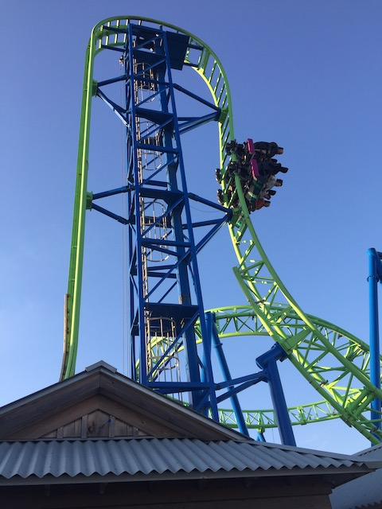
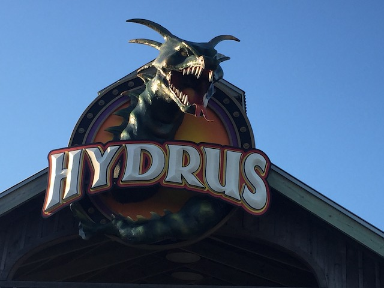

| |
Hydrus Review

For today's review, we are heading to Cansino Pier to review Hydrus. This is the parks Euro Fighter, and its star attraction. This is the ride that wound up replacing the Star Jet, which was famously destroyed by Hurricane Sandy and is one of the most famous examples of Hurricane damage. This is the ride that replaced that. And while I never rode Star Jet, I think it's safe to say that this ride was an improvement. So let's hop aboard. We get in the cars, pull down the lap bars (So glad this ride doesn't have OTSRs) and we're off! We roll around a turn and head straight for the vertical lift. For anyone who's never done a vertical lift before, it's pretty intimidating to just stare at. But before you know it, the lift begins to move and you begin to climb. As you're climbing, all you're able to see is the sky. So that's pretty cool. Anyways, you reach the top of the lifthill and suddenly slow down. Yep. It's got the Goliath effect. Oh well. No big deal. But right as you're getting a good view of Casino Pier and the Atlantic Ocean, you are yanked down in a beyond 90 degree drop. This provides you with some pretty good ejector airtime and instantly plants a smile on your face. After that awesome drop, you soar up into a vertical loop. And yeah, that's really fun and plants one nice smile on your face. Up next, a cutback (I know technically an overbanked turn, but damn it! It looks like an inversion. It feels like an inversion. I'm counting this god damn it!). The cutback is fun and actually provides a nice little moment of hangtime. I must say, I really like this element. We then rise up around a curved turn that provides us with some nice laterals. This transitions quite nicely into an inline twist that actually provides us with some nice hangtime. Yeah, you don't get that too often on most coasters. So it's definetly appreciated here. It again transitions directly into a downward curve, giving us some nice laterals as well as a little more speed. And sadly, we glide straight into the brake run from there. Yeah, it's pretty short. It's literally just the first drop, and the inversions. It lacks the bonus helix that Untamed has. So that's a downside. But on the upside, this really is really fun and smooth. Cause unlike Untamed, which is definately on the rough side and you'll need to brace. Here, nope! Just put your hands up and enjoy the ride! Also, the setting on the beach is one of my favorites! I just love beachside coasters, so that really helps this ride! =) Hydrus is just a really fun ride and a great fit for Casino Pier. Perfect replacement for Star Jet I'd definetly give it a ride or two while visiting the park. Let's just hope climate change doesn't destroy this ride too (DO SOMETHING ABOUT IT YOU LAZY CORRUPT POLITICIANS!!!).
7/10
Location: Casino Pier
Opened: 2017
Built by: Gerstlauer
Last Ridden: June 17, 2021
Hydrus Photos




Home
|